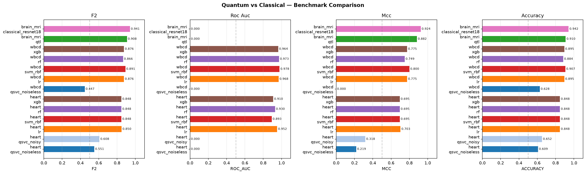
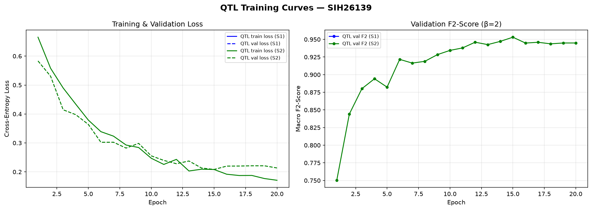
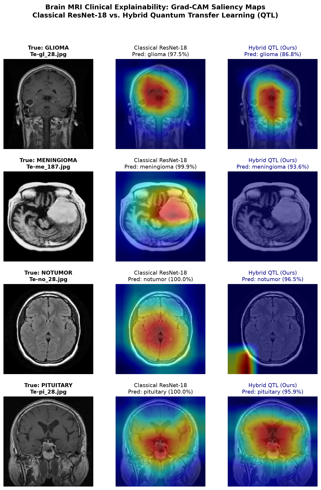
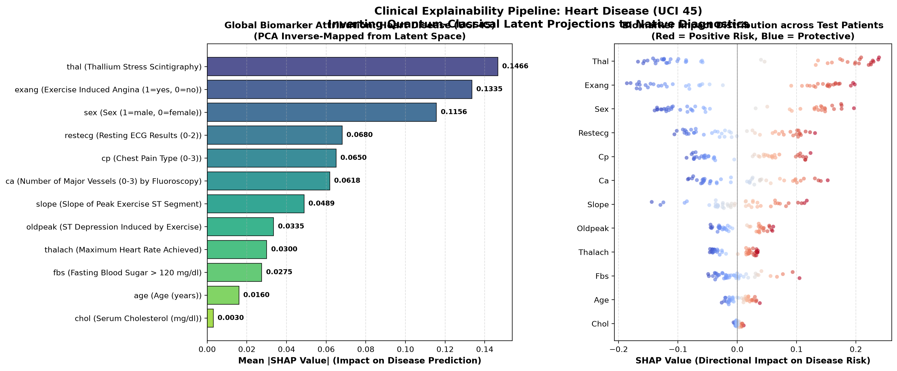
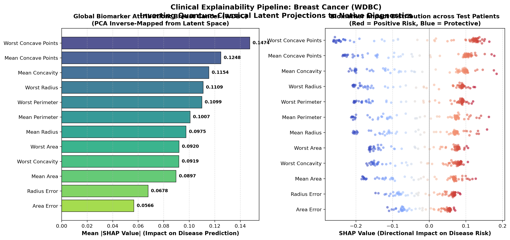
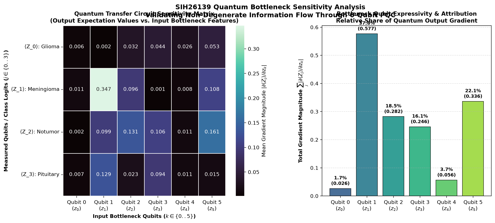

Verified test set metrics comparing quantum engines against classical classifiers.

Test Accuracy: 91.00% | Latency: 115.94 ms/sample
| Class | Precision | Recall | F1 | Support |
|---|---|---|---|---|
| Glioma | 95.85% | 75.00% | 0.8415 | 400 |
| Meningioma | 84.14% | 91.50% | 0.8766 | 400 |
| NoTumor | 89.64% | 99.50% | 0.9431 | 400 |
| Pituitary | 96.08% | 98.00% | 0.9703 | 400 |
Test Accuracy: 94.19% | Latency: 63.64 ms/sample
| Class | Precision | Recall | F1 | Support |
|---|---|---|---|---|
| Glioma | 97.61% | 81.75% | 0.8898 | 400 |
| Meningioma | 88.43% | 95.50% | 0.9183 | 400 |
| NoTumor | 93.90% | 100.0% | 0.9685 | 400 |
| Pituitary | 97.79% | 99.50% | 0.9864 | 400 |

Targeting layer4 of ResNet-18 backbone. Verifies anatomical lesion localization across all 4 tumor categories.

Inverting latent PCA components back to native biomarkers: ST depression (oldpeak), chest pain (cp), max HR (thalach).

Clinical attributions for nuclear perimeter, radius, and concave points.

Validates active, non-degenerate gradient transmission through all 6 bottleneck qubits across held-out Brain MRI test samples.

Executed against local FastAPI daemon on port 8000 (results/integration_test_report.json).
| Endpoint Test | Status | Latency | Outcome |
|---|---|---|---|
GET /model-info | 200 OK | 8.89 ms | Model schemas & topologies verified |
GET /results-summary | 200 OK | 24.34 ms | Multi-seed benchmark summary verified |
POST /predict [Heart Healthy] | 200 OK | 53.6 ms | Low Risk classified correctly |
POST /predict [Heart Diseased] | 200 OK | 64.3 ms | High Risk classified correctly |
POST /predict [WDBC Triage] | 200 OK | 55.5 ms | Triage threshold τ=0.10 applied |
POST /predict-image [Brain MRI] | 200 OK | 115.9 ms | QTL PyTorch+PennyLane forward pass verified |